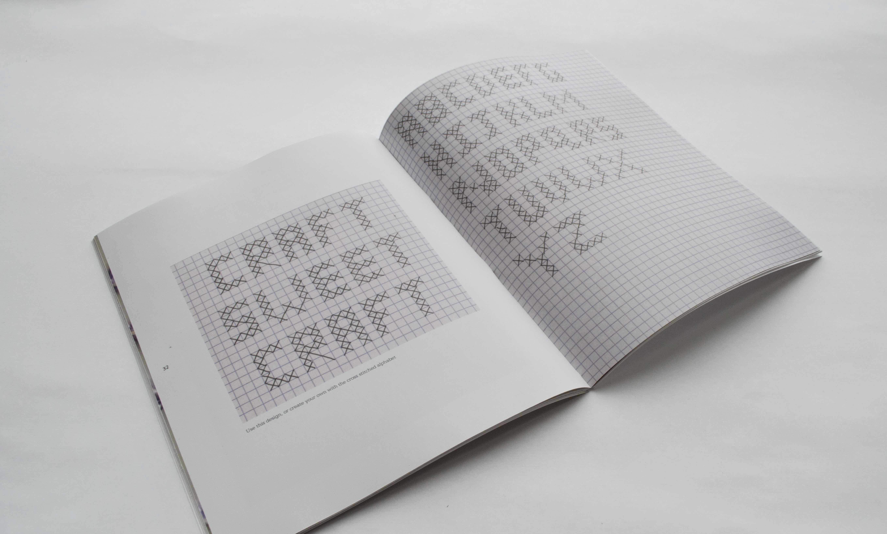
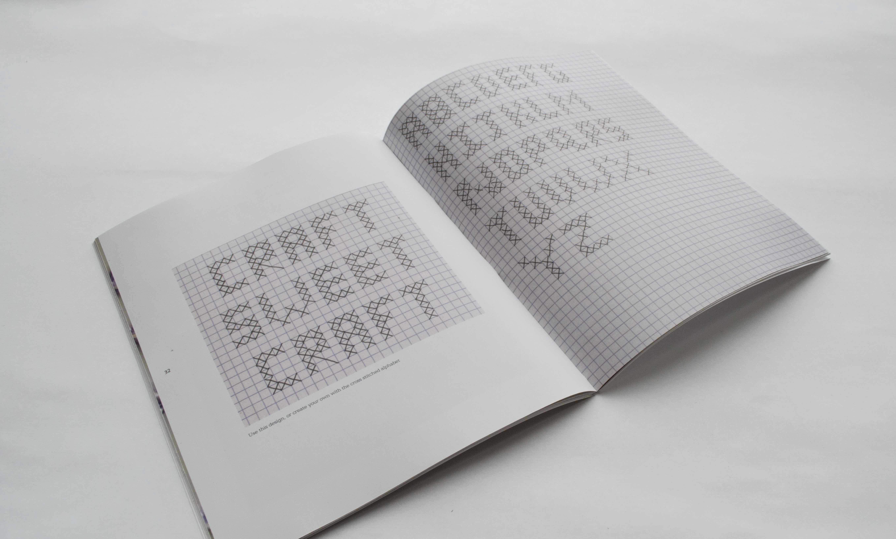
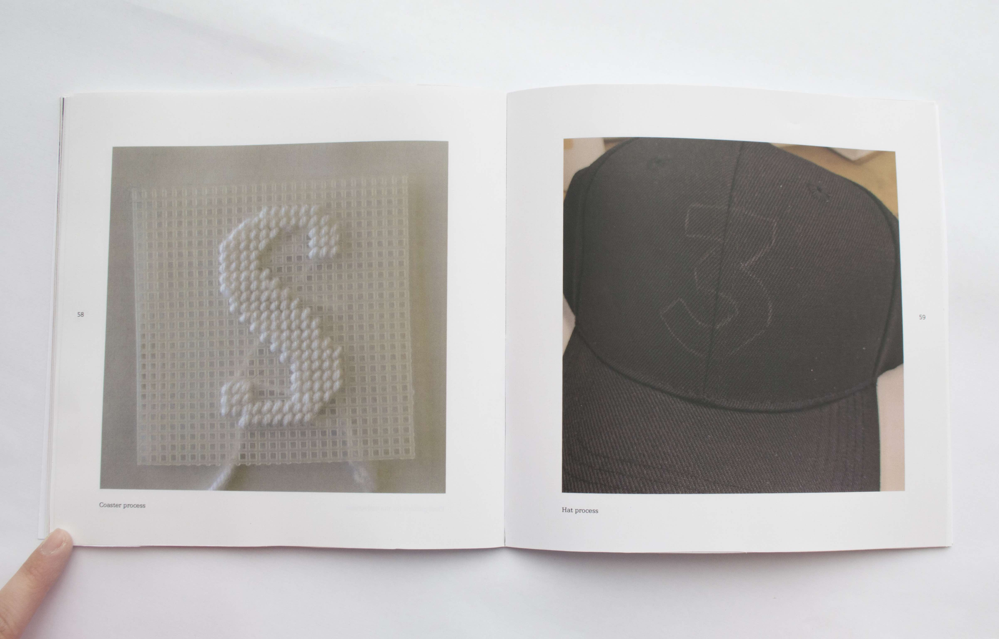

Abstract
What do design and embroidery have in common? This relationship has existed for centuries, but has rarely been discussed. Examples dating from the 5th century BC to today all use the same set of basic techniques to create endless patterns and messages. Yet, there are scarce resources relating typographic history and rules to embroidery, despite both sharing a common grid. Stitched Type explores the history of embroidered typography and encourages designers to add to it by creating their own embroideries. Through a collection of stitched typefaces and interactive projects, I hope to inspire designers to learn embroidery and stitch new designs on their own.
Practice Stitch Card
Stitched Type includes a practice stitch card for readers to try each basic stitch and keep as a reference.
Stitched Type includes a practice stitch card for readers to try each basic stitch and keep as a reference.

 

Process Book
A document of my research and material exploration that led to the deliverable.

← Previous
All
Next →
A document of my research and material exploration that led to the deliverable.